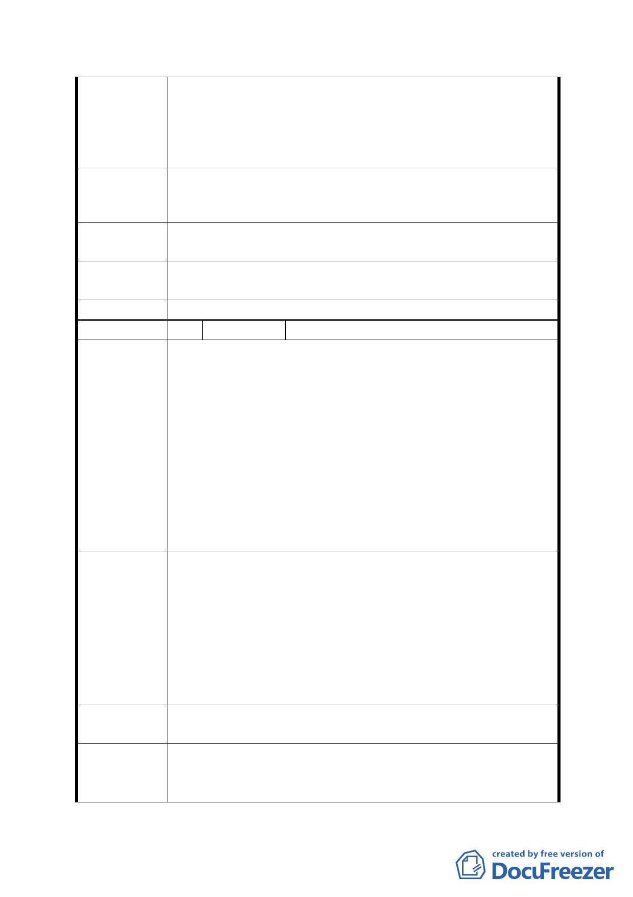

七、此地係為本人之祖產，若非教育局一時興起強迫徵收
而造成原地主無法委由民間開發以帶動當地發展
外，亦無故承受土增稅之損失及其使用權益。此刻貴
會又提出變更計劃，內容形同火上加油，嚴重影響長
期持有土地之地主權益。
綜合上述，請求撒銷 『 變更臺北市辛亥國、高中用地主要
建 議 辦 法 計畫案 』；若仍需使用則請徵收本人上述地號之所有土地，
以符合憲法保障人民財產權之意旨。
第五次專案小組
審查結論
同編號 1
市府修正後
回應說明
同編號 1、5
委員會決議 同意依「市府修正後回應說明」辦理
編 號 7 陳情人 王文之
在 7 月 25 日辛亥國高中用地的變更說明上，我聽到了工作
人員的報告和說明以及現場的學者教授和多數民的建議和
願望。我覺得千萬不可因小善而妨礙了該地區的宏觀發展，
因為現在要興建的節流池面積小積水量多，遠不如多等幾年
建一個面積大而容水量更大的節流池，豈不更有益更安全?
陳 情 理 由 況且國防部難得鬆口願意遷移這個佔地廣大的軍營，即使政
府一時財力不足，新址難覓，只要變更計畫先訂，再等幾年
甚至更久一點再搬遷也不為遲，否則，以現在捨大就小急就
章的草率通過這次的變更計畫，下次再想搬遷軍營，豈不又
要從頭做起而且夜長夢多，時局和政府稍變化，國防部又不
同意搬遷了。
立即停止現正進行中的防洪調節池。應該集中人力積極推動
具有宏觀遠見的軍營搬遷，以利辛亥捷運站商圈的發展，完
成大台北及文山區興昌里、興泰里…地區的更新建設!否則
建議辦法
僅僅完成現在的節流池的都計變更，下一次都計變更必將更
加困難，所以應該立即停止，目前水利單位正在進行的這個
簡陋又不安全的工程，以茲將來建一個面積更大容水多的節
流池豈不更好?字跡潦草詞不達意，如有需要，我願當面詳
陳。
第五次專案小組
審查結論
同編號 1
市府修正後
回應說明
1.本防洪調節池主要係調節辛亥路雨水下道洪峰流量，並以
調節 50%洪峰流量作規劃，另考量軍方營區既有建物之
駐用需求，故原規劃使用面積約 0.5 公頃，現配合文山區
- 21 -